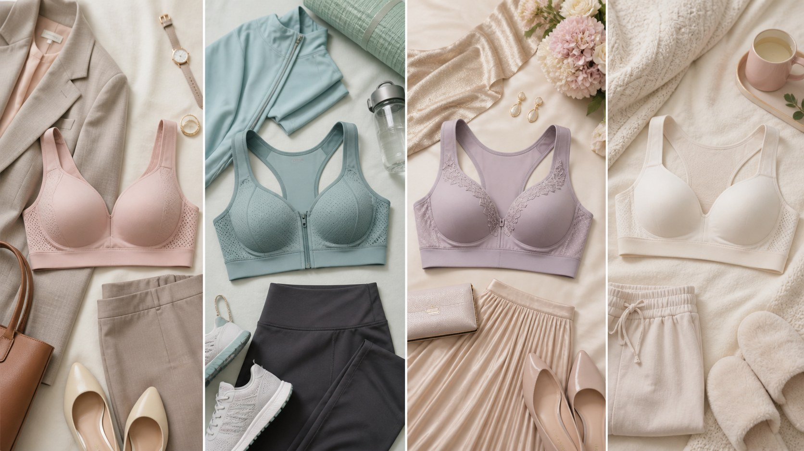

日常美化穿搭
不同场合的内衣｜让它各司其职
内衣不是只有一种标准答案。不同场景对支撑、隐形、舒适的需求各不相同，选对了，每天都更轻松。

你可能也有过这样的经历：穿着同一件内衣，上班觉得勒，运动时又不够稳，穿浅色连衣裙还露出明显的勒痕。问题往往不在你，而在那件内衣被派去了不该属于它的岗位。内衣其实分工明确，各司其职，不必勉强一件打天下。
日常通勤，首选承托舒适的类型。这个场景要的是长时间自在，杯型贴合、底围不勒、肩带不压肩，穿上后几乎感觉不到它存在，才是理想状态。面料上，棉质或带弹性的混纺更亲肤透气。比起追求聚拢，安稳和舒服更能让你一整天都舒展。
运动或快步走的日子，换一件专业防震内衣。它包裹更紧、支撑更足，能有效减少胸部随动作的晃动，也减轻对韧带的牵扯。挑防震款时，试穿时跳一跳、摆动手臂，感受它是否牢牢托住而不勒得太紧，透气排汗同样重要。
穿礼服、吊带、紧身或浅色上衣时，无痕内衣和隐形款就派上用场了。无痕设计省去接缝和蕾丝，不会在衣服下透出痕迹；露背或一字肩的场合，可以选低背、可拆卸肩带或胸贴，让衣服的线条干净利落。这一类的关键是「隐形」，而不是硬撑出某种形状。
孕期和哺乳期是身体变化最大的阶段，内衣也要跟着调整。孕期胸部会变大变重，选无钢圈、弹性好、能随体形变化的内衣更舒服；哺乳期则要选有方便开口设计、余量足够的款式，方便照顾宝宝。这段时间不必追求好看，舒适和对身体的照顾优先。
说到底，备好几件功能各异的换着穿，比孤注一掷地依赖一件要聪明得多。让每一件内衣回到它擅长的事情上，你的每一天也会轻松不少。内衣也会随季节、体重和状态悄悄变化，换季时不妨重新核对一下是否还合身，身体有小变化，给它搭的「伙伴」也跟着换一换就好。
本文用于公众健康教育，不构成医疗建议，不替代面诊。医美决策请与具备资质的医师面诊后作出。